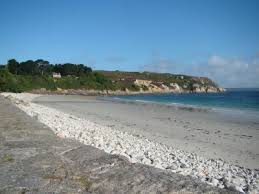
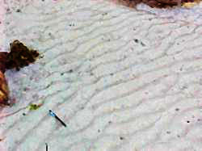
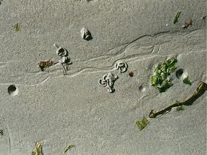
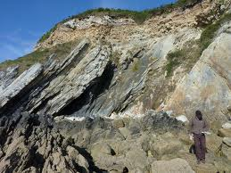
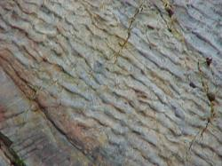
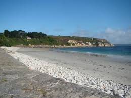
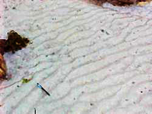
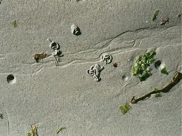
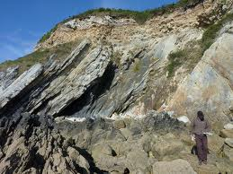
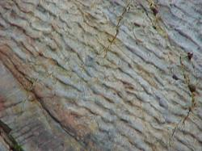

Compte rendu de sortie géologique à Camaret - Crozon
Compte rendu de sortie géologique à Camaret - Crozon

La plage du Corréjou
Aperçu de la plage
Aperçu de la plage

Ripple marks actuelles

Tout d'abord lors de cette excursion nous avons fait une étape à la plage du Corréjou. On peut la caractériser de plage typique. Comme on peut l'observer sur la photo, sur le haut de la plage se trouvent des galets et en bas du sable. Les galets, de par leur taille, sont poussé par les vagues vers le haut de la plage.
La sédimentation devient de plus en plus fine au fur et à mesure que l'on s'approche de l'eau. Sur le sable, on pouvait d'ailleurs observer des rides de sable, des ripple-marks. On peut les voir sur la seconde photographie. C'est l'agitation de la houle qui cause leur apparition sur la plage. Elles peuvent aussi se former sur les fonds, sous l'action des courants. Sur la plage se trouvaient aussi des traces de ruissellement qui descendaient du haut de la plage vers la mer, perpendiculairement aux ripple-marks.
Actualisme
Cette plage témoigne du principe d'actualisme. C'est un principe selon lequel les processus qui se sont exercés dans le passé lointain s'exercent encore de nos jours. Ainsi, avec ce que nous voyons à l'heure actuelle, nous pouvons nous imaginer ce qui se passait dans des ères lointaines.
Biodiversité
Terrier d'arénicoles (ver des sables)

Sur la plage du Corréjou, nous avons pu constater l'importance de la biodiversité et notamment de la faune. Nous nous sommes intéressés à des traces de reptation, dues aux littorines. Puis nous avons observé des creux dans le sable et nous avons remarqué qu'à chaque creux correspondait un tourbillon de sable. Ce sont des terriers d'arénicoles, comme on peut le voir ici sur la photo. Les arénicoles sont des vers vivant dans le sable. Ils se nourrissent en suçant le sable, ils récupèrent les nutriments et les déchets organiques présents dans le sable. Ils rejettent le sable filtré sous forme de tourbillon, "boudin de sable" à la surface.
Affleurement de roches
Grès armoricains

Ripple marks fossilisées

Enfin, nous nous sommes intéressés à un affleurement de roches. Les strates de ce grès Armoricain que vous pouvez observer sur le document ne sont pas horizontales. Elles témoignent donc de déformations. Ce sont des strates de quartzite avec quelques traces noires de schiste. Ensuite nous nous sommes intéressés à des ripple-marks fossilisées. En effet, certaines traces sur le sable peuvent fossilisées. La première étape de cette fossilisation est la superposition de sable et de vase qui vont former une roche sédimentaire. La roche sédimentaire va ensuite subir le phénomène de métamorphisme. Le grès qui constituait la roche sédimentaire devient du quartzite, tandis que la pélite devient du schiste.
Par Mathieu CAROFF, Maxime LUCAS et Alexandre RIOU
La plage du Corréjou
Aperçu de la plage
Aperçu de la plage |
Ripple marks actuelles |
Tout d'abord lors de cette excursion nous avons fait une étape à la plage du Corréjou. On peut la caractériser de plage typique. Comme on peut l'observer sur la photo, sur le haut de la plage se trouvent des galets et en bas du sable. Les galets, de par leur taille, sont poussé par les vagues vers le haut de la plage.
La sédimentation devient de plus en plus fine au fur et à mesure que l'on s'approche de l'eau. Sur le sable, on pouvait d'ailleurs observer des rides de sable, des ripple-marks. On peut les voir sur la seconde photographie. C'est l'agitation de la houle qui cause leur apparition sur la plage. Elles peuvent aussi se former sur les fonds, sous l'action des courants. Sur la plage se trouvaient aussi des traces de ruissellement qui descendaient du haut de la plage vers la mer, perpendiculairement aux ripple-marks.
Actualisme
Cette plage témoigne du principe d'actualisme. C'est un principe selon lequel les processus qui se sont exercés dans le passé lointain s'exercent encore de nos jours. Ainsi, avec ce que nous voyons à l'heure actuelle, nous pouvons nous imaginer ce qui se passait dans des ères lointaines.
Biodiversité
Terrier d'arénicoles (ver des sables)
Sur la plage du Corréjou, nous avons pu constater l'importance de la biodiversité et notamment de la faune. Nous nous sommes intéressés à des traces de reptation, dues aux littorines. Puis nous avons observé des creux dans le sable et nous avons remarqué qu'à chaque creux correspondait un tourbillon de sable. Ce sont des terriers d'arénicoles, comme on peut le voir ici sur la photo. Les arénicoles sont des vers vivant dans le sable. Ils se nourrissent en suçant le sable, ils récupèrent les nutriments et les déchets organiques présents dans le sable. Ils rejettent le sable filtré sous forme de tourbillon, "boudin de sable" à la surface.
Affleurement de roches
Grès armoricains |
Ripple marks fossilisées |
Enfin, nous nous sommes intéressés à un affleurement de roches. Les strates de ce grès Armoricain que vous pouvez observer sur le document ne sont pas horizontales. Elles témoignent donc de déformations. Ce sont des strates de quartzite avec quelques traces noires de schiste. Ensuite nous nous sommes intéressés à des ripple-marks fossilisées. En effet, certaines traces sur le sable peuvent fossilisées. La première étape de cette fossilisation est la superposition de sable et de vase qui vont former une roche sédimentaire. La roche sédimentaire va ensuite subir le phénomène de métamorphisme. Le grès qui constituait la roche sédimentaire devient du quartzite, tandis que la pélite devient du schiste.
Par Mathieu CAROFF, Maxime LUCAS et Alexandre RIOU